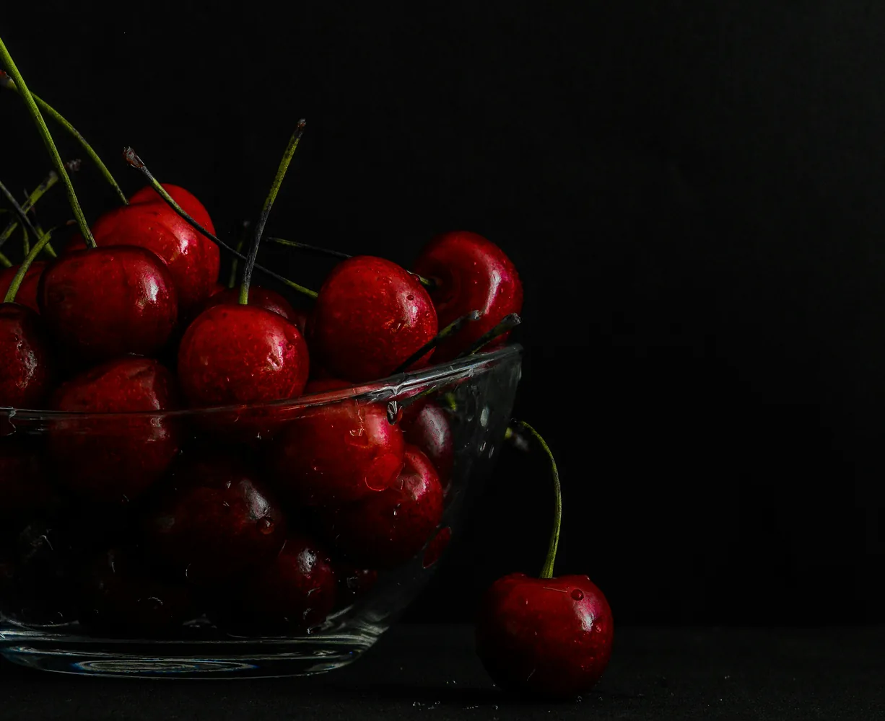
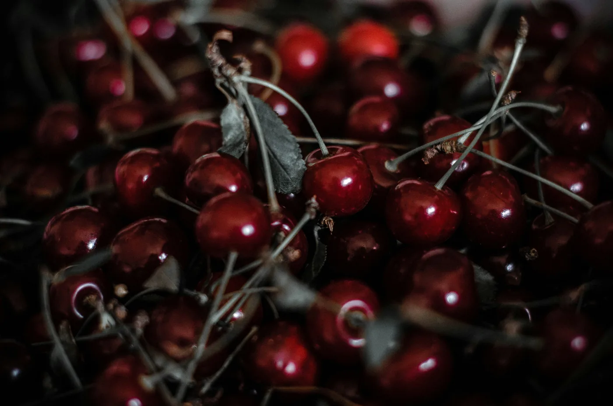
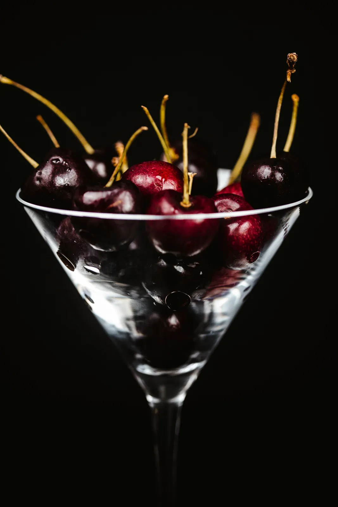

Сладкие, терпкие, кисло-сладкие и почти десертные.
Вишня бывает разной.
Мы собрали сорта с разным вкусом, характером и назначением, чтобы было проще найти свой.
Учебный концепт интернет-магазина. Здесь можно спокойно нажимать на всё: реальные деньги не пострадают.



Подбор по вкусу
Кислее, слаще, плотнее или мягче — без угадываний по одной фотографии.
Понятные карточки
Вкус, размер, назначение и вес плода собраны в одном месте.
Без лишнего шума
Небольшой каталог, в котором легко сравнить сорта и выбрать подходящий.
Попробовать первым
Сорта для знакомства
CHERRY?
Не все ягоды должны быть одинаковыми.
Мы не пытаемся свести выбор к «вишня или черешня». Один сорт хорош в десертах, другой держит вкус после термообработки, третий хочется есть прямо так.
Для свежей подачи, выпечки, напитков и заготовок.
Сочная мягкость или плотная текстура с яркой кислотностью.
Каждый сорт описан коротко и по делу, чтобы сравнивать было проще.